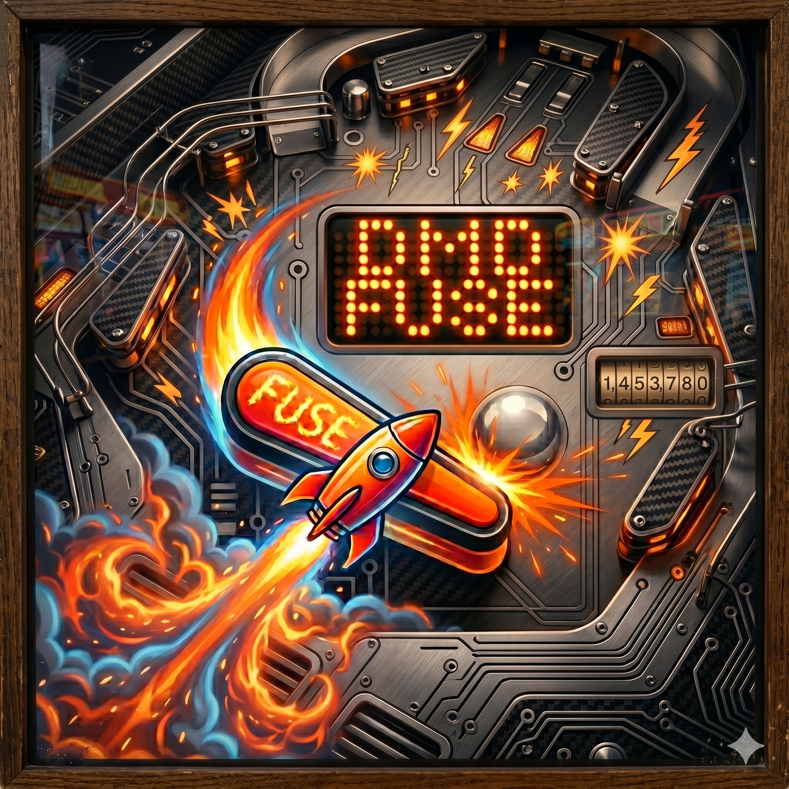

L'interface Pincab ultime pour Android. Capturez le flux TCP brut de VPX Standalone et affichez vos matrices LED en temps réel avec un habillage custom de haute qualité.
DMD FUSE n'est pas qu'un simple afficheur. C'est le cœur visuel de votre borne d'arcade Android ou de votre setup Samsung DeX.
Grâce à son serveur Node.js ultra-léger et son interprétation chirurgicale des paquets, les animations s'affichent avec une latence quasi-nulle, laissant le CPU libre pour la physique de votre bille.

Traduction en direct du signal natif de Visual Pinball X pour une intégration parfaite dans un WebView Android optimisé.
Basculez entre l'affichage matrice classique (128x32) et le format ColorDMD moderne (256x64) d'une simple pression sur l'écran.
Uploadez vos propres backglasses (statiques ou animations MP4/GIF) directement depuis l'application pour habiller votre fronton.
Ce guide est conçu pour une installation 100% Android (VPX Standalone + DMD FUSE sur le même appareil). Pas de panique si vous n'avez jamais codé, il suffit de suivre les étapes dans l'ordre !
Android est programmé pour tuer les applications en arrière-plan afin d'économiser de la batterie. Il faut lui dire de laisser notre serveur tranquille.
Termux est une petite application qui va faire tourner notre serveur en tâche de fond.
Maintenant que le moteur est prêt, on lance le script.
Il faut dire à votre jeu d'envoyer son affichage vers notre nouveau serveur.
La touche finale pour afficher votre DMD sur votre Pincab.
Récupérez les derniers fichiers pour mettre à jour votre borne.
📥 DMD_FUSE.apk (Client)